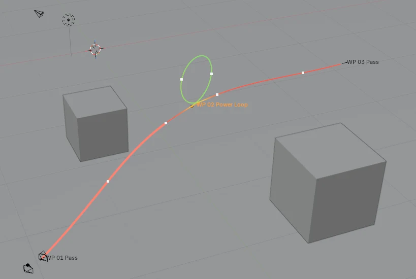
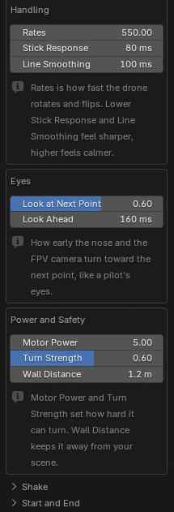
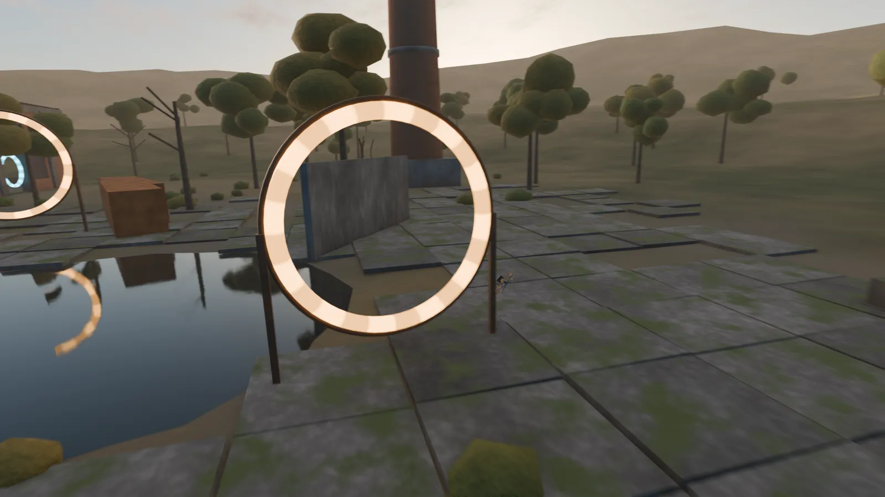
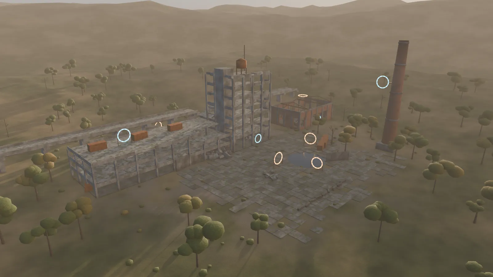
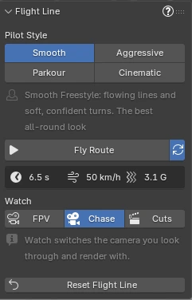

Blender add-on by LarkLab
FPV Flight LineDrone Flight Animation Generator
Click a few points on your scene and get a complete freestyle FPV flight: banking, punch-outs, power loops, flips, dives and gates, flown around your geometry and filmed by its own cameras.
Click where it starts. Click where it flies.
- Press New Flight in the Flight Line tab and click on your scene. The drone, its FPV camera and a chase camera appear there.
- Click where it should fly. It flies the route straight away.
- Keep clicking to add points, then press Enter. Press FPV or Chase and play.

Thirteen moves, measured against your scene.
Pick a move for any waypoint. Moves that need room are checked against your geometry: if one doesn't fit it is flown smaller, and if there is no room at all the drone flies straight through and the panel tells you which waypoint it was.
Fly through
- Pass
- Flies through the point
- Race Gate
- Straight through a gate placed at the point
- Gap
- Threads an opening: a window, an arch, two buildings
- Proximity Skim
- Flies very close past the nearest surface
Loops and dives
- Power Loop
- A full vertical loop, up and over
- Split-S
- Rolls inverted, pulls down, comes back lower
- Dive
- Over the edge, straight down, pulls out at the bottom
- Reversal
- Half loop up, rolls upright, comes back higher
Throttle cut
- Roll
- Cut, 360° roll, punch out
- Flip
- Cut, 360° backflip or front flip
- Yaw Spin
- A floating flat 360° spin
Circle
- Orbit
- Circles the point, optionally looking at it
- Corkscrew
- Spirals up around trees, pillars and towers
Follow a car. Hit a beat. Hold a subject.
Beyond clicking points, the add-on can build the whole route for you and time it to your edit.
Follow Subject
- Tail Chase
- Right behind any animated object, a car or a character
- Low / High
- Low and close, or higher and further back
- Side Pace
- Alongside, matching its speed
- Overtake
- Keeps it in view, passes it, flies on ahead
Timing and aim
- Arrive at Frame
- Pin any point to a frame for a music cue; speeds are solved to fit
- Look Targets
- The nose and FPV camera turn toward the objects you pick
- Speed Widening
- The FPV lens opens up as the drone speeds up
Ready-made shots
- Orbit Reveal
- Fly in, circle the object once, fly out
- Rising Orbit
- Spiral up around it
- Fly-By
- Pass alongside, turning to keep it in view
- Punch-In / Dive
- Climb over it, or dive down its far side
Your own lines
- From Curve
- Turn any curve into a route
- Edit anything
- Shots and follows are ordinary waypoints: move them, add tricks
Same route, four pilots.
One button sets how the pilot flies. These are the same nine rings flown in each style, measured from the drone's animation.
Smooth
Flowing lines, soft confident turns
Aggressive
A little faster, harder banks
Parkour
Slower, tight to every surface
Cinematic
Slow and gentle, for reveals
Or tune your own pilot.
Every setting has a plain name, and the ? button shows a short explanation for each group. Change one and the flight is flown again a moment later.

Flown the way a real quad flies.

Tilt from thrust
A quad can only push along its own up axis, so the drone leans into every acceleration and goes inverted only when the line needs it.
Speed the motors allow
It slows for tight corners and climbs, gains speed in dives and can't brake harder than its Motor Power.
A pilot's hands
Rates and Stick Response limit how fast it rotates, so flips and rolls take as long as on a real radio, easing in and out.
A pilot's eyes
Look at Next Point turns the nose and FPV camera toward the next gate before the drone gets there.
Measured on our nine-ring test course. Camera Shake and Propwash add stick corrections and the wobble after a punch-out; Shake Variation gives a different shake on the same line.
Three cameras and the cuts between them.
The drone's own camera, with uptilt and field of view, looking where the pilot looks.
Rendered in EEVEE, no post effectsIt flies around your scene, not through it.
The route keeps a set Wall Distance from your geometry, and when a wall stands between two waypoints the drone finds a way around it. With no clear way at full distance it squeezes through closer before it goes over the top.
On the ring course in all four styles, and in our voxel ruin, blocky city and mountain test scenes, the drone didn't pass inside geometry on a single frame.

Live while you edit. Plain keyframes when you render.
Live flight line
The viewport line is drawn from the drone's animation, colored by speed or by move, with a dot for every second and the next seconds highlighted as the drone flies.
Renders without the add-on
The flight is ordinary keyframes, so the file renders on any machine or farm. The drone also carries speed, throttle and altitude properties for your drivers.
Your own drone
Use your own model as the drone; put its propellers in a collection and they spin with the throttle.
Same settings, same flight
Every flight is repeatable. Reset Flight Line clears everything the add-on made, after a confirmation.

Details
- Blender
- 5.0 or newer
- Type
- Blender extension (add-on)
- Where
- Flight Line tab in the 3D Viewport sidebar (N)
- Output
- Keyframes on the drone and cameras, timeline markers for cuts
- Scale
- Scenes in meters
- Flights
- One flight rig per scene
- Version
- 1.0.0
- License
- GPL-3.0-or-later
Want the goggle look? FPV Feed, our separate add-on, adds signal breakup and a live flight OSD to any render, with telemetry baked from your camera.
See FPV Feed